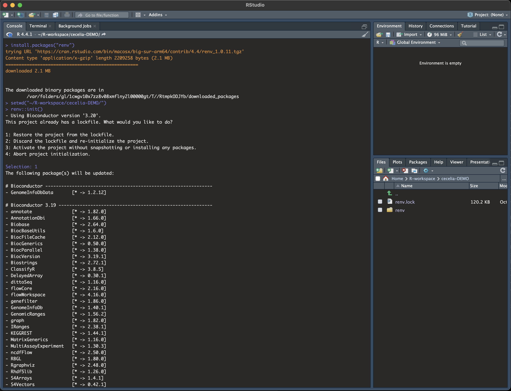
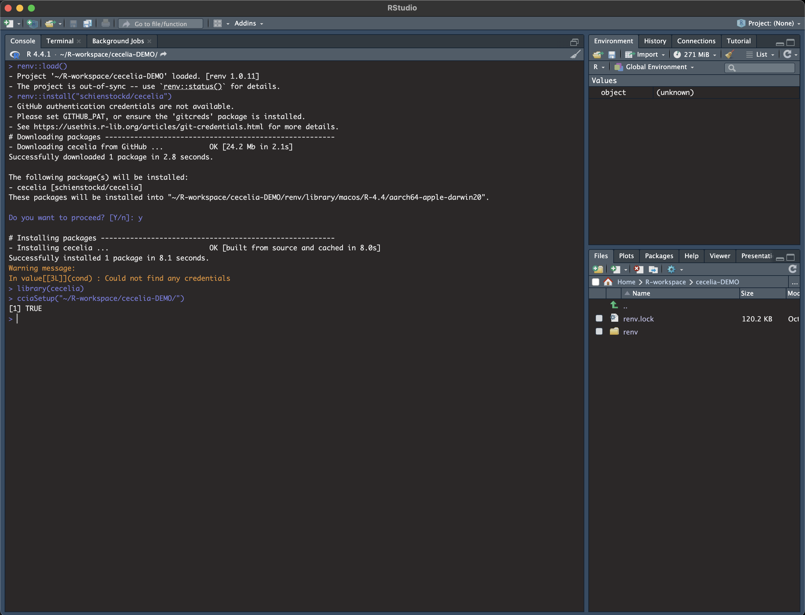
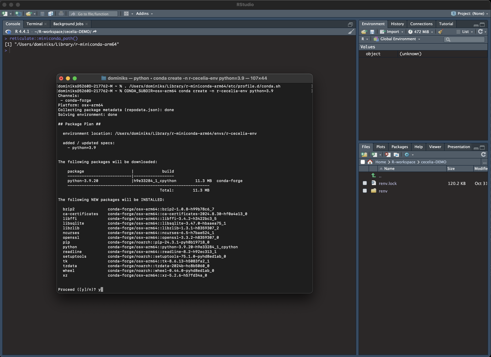
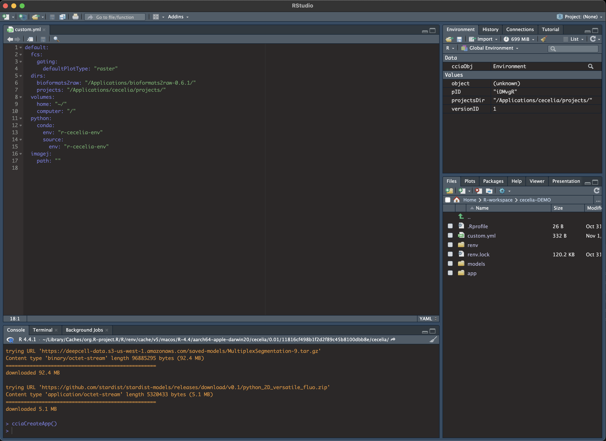

MacOS installation#
Step by step guide#
Installation should take less than 1 h. Most time will be spent compiling R and python packages where binaries are not available. DISCLAIMER: While we aimed to make this installation process as simple as possible, a basic knowledge of running commands in Terminal and installing packages R is helpful.
Install library dependencies. We recommend using Homebrew to install the necessary dependencies. If you do not have Homebrew, install it by typing or pasting the following into Terminal:
Install Homebrew#/bin/bash -c "$(curl -fsSL https://raw.githubusercontent.com/Homebrew/install/HEAD/install.sh)"You need to add Homebrew to your PATH variable to make it available (see here why).
Add Homebrew to your PATH#echo 'eval $(/opt/homebrew/bin/brew shellenv)' >> ~/.zprofile eval $(/opt/homebrew/bin/brew shellenv)Attention
If you are running on Apple Silicon (Mx) make sure that Homebrew is recognising the correct machine architecture. In Terminal run brew config. The output should look something like the following. The important information is that macOS should be arm64, Rosetta 2 should be false and HOMEBREW_PREFIX should be
/opt/homebrew.Expected output of brew config#HOMEBREW_VERSION: 4.4.5 ORIGIN: https://github.com/Homebrew/brew HEAD: 254bf3fe9d8fa2e1b2fb55dbcf535b2d870180c4 Last commit: 8 days ago Core tap JSON: 18 Nov 05:40 UTC Core cask tap JSON: 18 Nov 05:40 UTC HOMEBREW_PREFIX: /opt/homebrew HOMEBREW_CASK_OPTS: [] HOMEBREW_MAKE_JOBS: 24 Homebrew Ruby: 3.3.6 => /opt/homebrew/Library/Homebrew/vendor/portable-ruby/3.3.6/bin/ruby CPU: 24-core 64-bit arm_blizzard_avalanche Clang: 16.0.0 build 1600 Git: 2.39.5 => /Applications/Xcode.app/Contents/Developer/usr/bin/git Curl: 8.7.1 => /usr/bin/curl macOS: 15.1-arm64 CLT: 16.1.0.0.1.1729049160 Xcode: 16.1 Rosetta 2: falseIf HOMEBREW_PREFIX is
/usr/localand the other parameters also do not match, you might have to check that Terminal is running in the correct mode. Do the following is based on this Stackoverflow post. Go to: Finder -> Applications -> Utilities -> Terminal. Right click on Terminal and select Get Info. Uncheck checkbox: ‘Open using Rosetta’. Quit Terminal Application. Restart Terminal and check your machine arhictecture:Check machine architecture#uname -m # should return arm64 NOT x86_64Then, remove Homebrew and install again.
Then install the required programs using Homebrew via Terminal:
Install required programs via Homebrew#brew install pstree openssl gdal cmake
You will also most likely need Xcode to compile packages in R and Python. Follow the installation instructions on Mac App Store.
Install R base for MacOS and RStudio. We tested this on R version 4.4.1. If you use an older version of R the package dependencies might not be resolved during
renv::init.Start RStudio and install renv in the R console.
Install renv#install.packages("renv")
Install package dependencies.
Create a folder under Applications named cecelia.
Within the cecelia folder create a directory projects where all projects data will be stored.
Download the renv.lock file into
/Applications/cecelia. Important: save this as renv.lock NOT renv.lock.txt. Remove .txt if this is appended during the download.Then in RStudio, create the R-environment using the example below. To do this, you must set the current working directory to the directory where the renv.lock file is located.
When prompted during the process, Select “1” to restore the project from the lockfile.
Tip
We are going to use the path
/Applications/ceceliathroughout this manual. You can place it anywhere else if you want.Tip
Unix systems have three main signs to specify directories
Common path directories#~ defines the home directory . defines the current directory .. defines the parent directory ~/Documents is shortform for /Users/dom/DocumentsInit R-environment## An example would be setwd("/Applications/cecelia") renv::init(bioconductor = TRUE)Attention
Make sure that this command installs the required packages, that is, there should be a long list of packages including some from Github and Bioconductor. If that is not the case, check that the lock-file has packages listed and repeat the previous step with renv::init().
Attention
If you run into issues that R cannot compile a package with gfortran, such as make: /opt/gfortran/bin/gfortran: No such file or directory, it might be that the path cannot be found because gfortran is now packaged into gcc and R might be looking in the wrong spot. To change this location follow the instructions as outlined in this Stackoverflow post. In Terminal install gcc:
Install gcc#brew install gccCheck your gcc version with:
Check gcc version#ls /opt/homebrew/Cellar/gcc/ # for Apple Silicon ls /usr/local/Cellar/gcc/ # for macOS IntelCreate a file ~/.R/Makevars and enter the following. You need to change the gcc version for your version number.
Change Fortran paths#FC = /opt/homebrew/Cellar/gcc/11.3.0_2/bin/gfortran F77 = /opt/homebrew/Cellar/gcc/11.3.0_2/bin/gfortran FLIBS = -L/opt/homebrew/Cellar/gcc/11.3.0_2/lib/gcc/11Attention
If there are further errors that packages cannot be compiled because header files are not found, such as
fatal error: 'cstlib' file not foundorfatal error: 'iostream' file not found, it might be that RStudio is modifying the PATH variable when using renv, see Github issue. If that happens, do the installation in Terminal NOT RStudio. Open Terminal and type in R and follow the same instructions.Attention
If you still run into compiler issues, please remove and re-install Xcode.
Reinstall Xcode#sudo rm -fr /Library/Developer/CommandLineTools xcode-select --install
{kind=link}
Load the environment you have just created and install Cecelia package.
{kind=link}
You must define a base directory where configuration files, models and the shiny app will be stored.
Define base directory#library(cecelia) cciaSetup("/Applications/cecelia")In case you get stuck at any point and have to restart R, you need to redefine the path you are working on
Restart Cecelia#Sys.setenv(KMP_DUPLICATE_LIB_OK = "TRUE") renv::load("/Applications/cecelia") library(cecelia) cciaUse("/Applications/cecelia")
{kind=link}
Cecelia depends on a conda environment which must be created.
{kind=link}
For Apple Silicon systems (Mx), you must pre-create the conda environment in Terminal otherwise it will use the wrong platform type.
You must source conda first with the following commands. reticulate::miniconda_path() will give you the conda path that you must put into the following command.
Pre-create conda environment in Terminal#. /REPLACE_ME/etc/profile.d/conda.sh CONDA_SUBDIR=osx-arm64 conda create -n r-cecelia-env python=3.9
{kind=link}
Then, back in Rstudio, Create conda environment¶
{kind=link}
Download models for deep-learning segmentation, tracking and others.
{kind=link}
Create shiny app in base directory.
Create shiny app#cciaCreateApp()
Adjust the config file.
If you want to adjust where your projects are located, you must adjust the parameters in
/Applications/cecelia/custom.ymlto your system and download bioformats2raw:
Download bioformats2raw and place it into the
/ApplicationsfolderAdjust config in text editor of RStudio#default: dirs: bioformats2raw: "/Applications/bioformats2raw-0.9.0/" projects: "/Applications/cecelia/projects" volumes: home: "~/" computer: "/" python: conda: env: "r-cecelia-env" source: env: "r-cecelia-env"
{kind=link}
Run the app.
{kind=link}